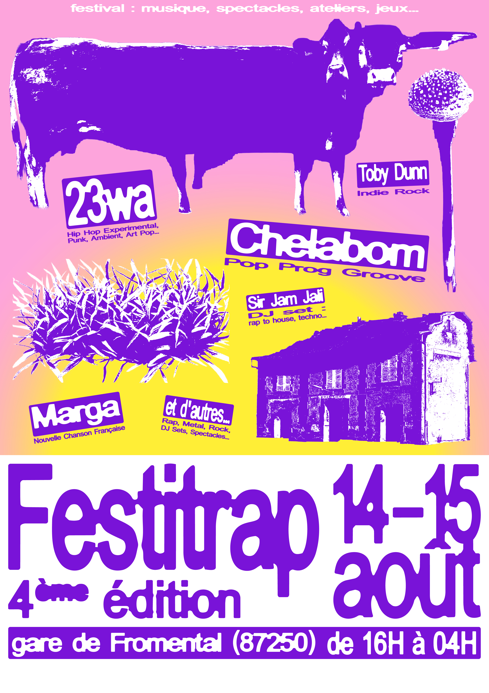

ACCÈS
En voiture : 10 min de La Souterraine, 30 min de Limoges (sortie 24). En vélo : 30 min depuis La Souterraine. En train : site à 30 m de la gare de Fromental.
4ème édition
Festival · musique · spectacles · ateliers · jeux
VOIR LE PROGRAMME ↓Deux jours de fête en pleine campagne
Festitrap, c'est LE festival de Concordia : une programmation éclectique du rock à la techno, une scénographie tout droit sortie d'un imaginaire rêveur, et des espaces sains et conviviaux ouverts à tous les âges.
On transforme le terrain d'une vieille auberge creusoise en terrain de jeu géant, le temps d'un week-end. Décors, scènes alternatives, voisin·es et bénévoles : ici la culture se construit ensemble.

En voiture : 10 min de La Souterraine, 30 min de Limoges (sortie 24). En vélo : 30 min depuis La Souterraine. En train : site à 30 m de la gare de Fromental.
Restauration et camping disponibles. Ouverture des portes à 16H, jusqu'à 04H. Événement intergénérationnel, ambiance conviviale et festive.
Tarif : 30€. Pour toute question, bénévolat ou partenariat :
concordia.asso23@gmail.com
06 17 34 73 58